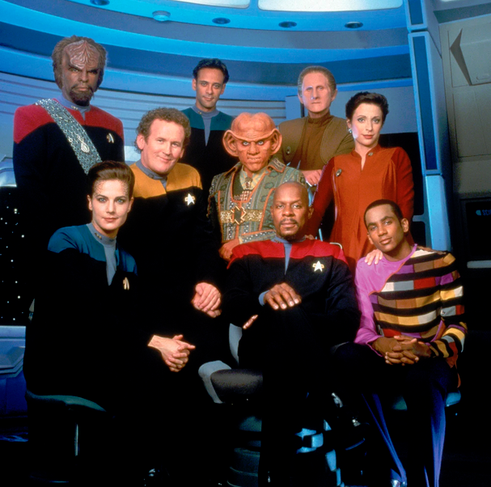

| Star Trek: Deep Space Nine | |
|---|---|
|  | |
| Abbreviation: | DS9 |
| Episodes: | 173 |
| Air dates: | Jan 3, 1993 - Jun 2, 1999 |
| In-universe years: | 2369-2375 |
| Universe Timeline | |||
|---|---|---|---|
| 2363 | |||
| 2364 | Star Trek The Next Generation (TNG) |
||
| 2365 | |||
| 2366 | |||
| 2367 | Battle at Wolf 359 | Curzon dies, Dax joins with Jadzia | |
| 2368 | |||
| 2369 | Star Trek Deep Space Nine (DS9) |
(Sisko: Age 37) | |
| 2370 | |||
| 2371 | Star Trek Voyager (VOY) |
Star Trek Generations | |
| 2372 | |||
| 2373 | Star Trek: First Contact | ||
| 2374 | |||
| 2375 | Star Trek: Insurrection | ||
| 2376 | |||
| 2377 | |||
| 2378 | |||
| 2379 | Star Trek: Nemesis | ||
| 2380 | Star Trek Lower Decks (LOW) |
||
| 2381 | |||
| 2382 | |||
| 2383 | Star Trek Prodigy (PRO) |
||
| 2384 | |||
| 2385 | |||
Summary: Full Episode List
Detailed guides: Season 1 • Season 2 • Season 3 • Season 4 • Season 5 • Season 6 • Season 7
Star Trek: Deep Space Nine takes place in the 24th century, two years after the Battle at Wolf 359, and it runs concurrently with parts of The Next Generation, Voyager, and three Star Trek films. DS9 is the fourth Star Trek series, and it ran from 1993-1999. The show broke from the "norm" in three main ways: it took place on a space station instead of a starship, it experimented with serialized storytelling, and its stories were comparatively "darker" than the more idealized future that was envisioned by Gene Roddenberry.
Critics of the show say that the stationary nature of a space station made the show boring, since the crew wasn't always traveling to new worlds. This is an assertion with which I disagree - I think being on a station is certainly different than previous Trek, but I think the stories were just as engaging. Many people also find the darker storytelling to be antithetical to their vision of what Star Trek "should" be. Personally, I find these stories to be more realistic and richer, because they allow us to explore humanity's flaws as well as their strengths.
The last defining characteristic of this series is the serialized storytelling. Instead of each episode being self-contained and having everything wrapped up before the credits roll, this series uses some multiple-episode story arcs, including a 10-episode arc for the series finale. Before this series, a two-part episode was the longest story line that Trek was willing to use, and those were usually only reserved for season finales or premieres.
Overall, when I first started watching this series in 1993, I honestly didn't like it. But it really grew on me, and it has since become my favorite all-time Star Trek series.
Understanding Ratings and Recommendations
Everyone has different tastes and opinions, and my opinions certainly aren't always popular. To help combat that, a "final score" on any episode is an average of my rating and the ratings from 3 other independent sources, including IMDB. Though, my rating is weighted a little higher in that calculation, because this is my website, after all. In addition to the ratings, I also provide a "Watch Recommendation" which doesn't necessarily have anything to do with the quality of the episode. Rather, the watch recommendation is based on how important the episode is to the overall story of the entire series, whether that episode is good or bad. See below for more details.
Episode scores:
| Episode Rating | Rating Value Range | Description |
|---|---|---|
| My rating |
★☆☆☆☆ ★★☆☆☆ ★★★☆☆ ★★★★☆ ★★★★★ |
|
| SF Debris rating | 0-10 |
|
| Ex Astris Scientia rating | 0-10 |
|
| Normalized IMDB rating | 0-10 |
|
| FINAL SCORE | 0-10 |
|
Additional awards:
| Award | Description | |
|---|---|---|
| ♥ | Personal Favorite | This is a purely subjective distinction that indicates an episode that I just particularly like, and there is no accounting for taste. |
| 🥇 | 1st place | These are awarded to what I consider to be the best episodes in the series, but that are also representative of the series. This means that I generally won't award them to "special" episodes. For instance, in the case of Deep Space Nine, episodes like Trials and Tribble-ations or Far Beyond the Stars, wouldn't be considered for these despite being really good episodes. |
| 🥈 | 2nd place | |
| Admiral Pips | Pips are awarded to episodes that are the most stand-out, representative examples of the series as a whole. | |
| Vice Admiral Pips | ||
| 🏅 | Special Award | A Special Award is given to episodes that have something truly unique to be celebrated. |
| 🎖 | General Award | A General Award is given to episodes that deserve something a little extra over a 5-star review. |
| ⚑ | Penalty Flag | A penalty flag is given to an episode that is far enough out of the norm that it can hardly be considered part of the series. |
| ⚑ | Red Flag | A red flag indicates content that is inappropriate, outdated, insensitive, or possibly even offensive. |
Watch Recommendations:
Watch recommendations are mostly based on how important the episode is to the overall series, not necessarily whether the episode is particularly good.
| Category | Description | # of episodes in this series | |
|---|---|---|---|
| ‼ | BARE MINIMUM | This track is designed for someone who really has no intention to watch the show, but would like the bare-minimum experience to get the "gist" of the series from beginning to end. It will usually include the series premiere, the series finale, and a smattering of episodes in between. Episodes in this track are frequently also in the "Must Watch" category, but not always. This track doesn't always include high-scoring or iconic episodes; it focuses instead on giving you the quickest glimpse into the important elements to the overall story arc of the entire series. | 12 |
| 🕶 | MUST WATCH | This category is for viewers who are willing to watch more than the minimum, but who still only want to see the most important and most iconic episodes of a series. This track fills out a lot more of the gaps in the story-telling than the "Bare Minimum" track does. "Must Watch" episodes aren't always just the best, highly-rated episodes. This track includes episodes that are the most important for understaning the overall story arc of the series, and that may include some low-rated, "not great" episodes. | 47 |
| ✔+ | HIGHLY RECOMMENDED | "Highly Recommended" episodes are usually ones that are highly-rated but aren't necessarily important to the overall story arc of the entire series. You could probably skip these without missing any important plot points, but you might be missing out on a really good episode. | 5 |
| ✔ | RECOMMENDED | If you're looking for even more episodes to watch, this recommended list is the place to go. These are episodes that are usually average or above-average, and they might provide more in-depth details about characters and events, but they aren't necessarily crucial to understanding the entire series. | 40 |
| ♦ | OPTIONAL | "Optional" episodes are usually ones that wouldn't otherwise be recommended, but might have a special guest character or particular plot point that you might be interested in watching. | 13 |
| - | NO RECOMMENDATION | This is the default. It doesn't mean the episode is bad, it just means that you can skip it without missing anything too important. | 62 |
| ✖ | NOTABLY BAD | Particularly bad episodes are called out in this category. Sometimes maybe you just want to see an example of the worst in a series? | 3 |
Spoiler Policy
- Generally speaking, you can safely read any of the episode guides without fear of spoiling any plot reveals or twists in a single episode.
- HOWEVER, this show is over 25 years old, so some things just can't be a surprise any more. Some of the episode descriptions or pictures may hint at things you might not have otherwise known if this is your first time watching. Also, certain other major developments in the series can't and won't be hidden - for example, if you didn't know that Worf becomes a main character in the show starting in Season 4, well, now you do!
- Blatant spoilers will be obscured, with a "Spoiler" tag that you can click on to reveal the contents. Don't read the spoiler unless you've seen the episode or don't have any intention of seeing the episode. Try it here:
Spoiler » This is a spoiler!